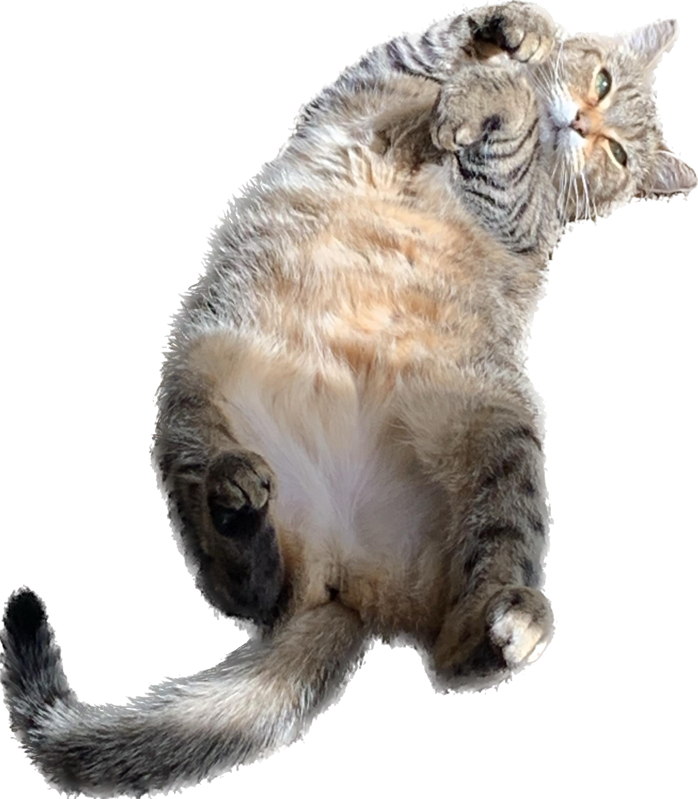

BAGEL
Bagel, the sassy tabby, struts through life with an air of feline confidence that can't be ignored. With a sleek coat of fur adorned in a striking tabby pattern, Bagel's mischievous green eyes reveal a playful spirit and a hint of sass that keeps everyone on their toes. Whether batting at a dangling toy or lounging on a sunlit windowsill, Bagel's every move exudes a nonchalant attitude, as if the world were merely a stage for their own amusement. This tabby's playful antics and clever maneuvers make them the talk of the neighborhood, as Bagel effortlessly weaves a tapestry of charm and charisma, leaving no doubt that this feline is truly one of a kind
